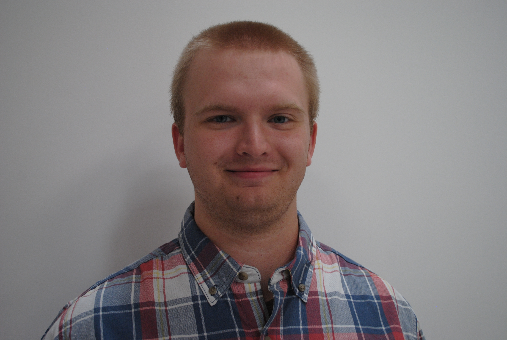

My name is Jacob Allen, and I went to Olive Branch High School. While in high school, I participated in various clubs and activities like the marching band, National Honor Society, and the Information Technology program at Career Tech Center East. I have always admired computer science and video game design from a young age, which made me eager to apply to Base Camp Coding Academy. I graduated Olive Branch High School May 18, 2024, and then I moved to Water Valley ten days later to start my coding journey in Python. In my free time, I enjoy playing video games and going out to Sarah, MS, to enjoy some fun trails on my dirt bike.